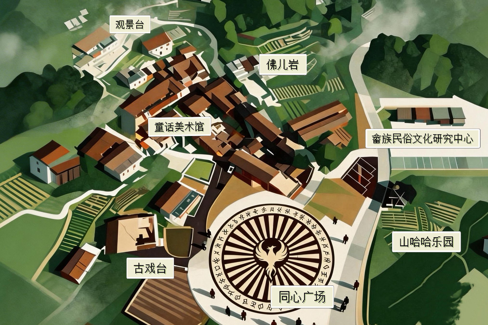

提示：可搜索工作日志、村庄概况、人员信息等 | 尝试输入"潘安森"、"云处村"、"时间循环"
📋 搜索结果
关闭 ✕
关于我们
耘雀组织简介、发展沿革与核心使命说明。
可访问
村庄概况
云处村地理信息、人口结构及基础数据档案。
可访问
村庄地图
云处村内部地形图及各功能区标注。
可访问
村庄动态监控
近期事件记录与异常情况实时监测报告。
可访问
工作日志
各成员操作日志及任务执行记录。
权限不足
聊天记录
耘雀内部频道历史消息记录。
可访问
调查中心
并行追踪多条调查线索，交叉验证收集证据。
权限不足
▌ 内部公告
2025-06-21
第128届夏至观测仪式执行完毕，数据已归档，详见工作日志。
[NO.001]
2025-06-14
观测台修缮工程已完工，核心区域恢复正常运行状态。
[NO.003]
2025-05-20
口述历史记录项目第一阶段完成，相关资料已加密存档。
[NO.002]
2025-04-01
系统检测到 NO.000 长期离线，已启动自动等待接入程序。
[SYS]
← 返回内网主页
▌ 组织架构
| 编号 | 姓名 | 职位 | 状态 |
|---|---|---|---|
| NO.001 | 潘安森 | 总负责人 | 在线 |
| NO.002 | 丁莫洋 | 联合发起人 | 在线 |
| NO.003 | 曾佳秋 | 信息管控 | 在线 |
| NO.004 | 武家铭 | 记忆修复专员 | 在线 |
| NO.005–099 | —— | 各时空观测者 | 部分在线 |
| NO.000 | 【空白】 | 【空白】 | 待激活 |
← 返回内网主页
云处村村庄概况
YUNCHU VILLAGE · SURFACE PROFILE · INTERNAL USE ONLY
▌ 一、基本村情
云处村，行政名称为浙江省丽水市云和县安溪畲族乡黄处村，是第五批中国传统村落、浙江省AAA级旅游景区村，拥有430多年建村历史。村庄位于浙南山区，距云和县城约10分钟车程，群山环抱，绿树掩映，黄泥房古朴雅致，畲族文化浓郁。
全村辖3个自然村，219户847人，其中畲族人口占30%。近年来，云处村以"千万工程"为指引，打造"传统村落+儿童村"新IP，建设"畲寨儿童文学村"，成为云和"童话王国"的文化动力源。
| 项目 | 数据 |
|---|---|
| 行政区划 | 浙江省丽水市云和县安溪畲族乡 |
| 建村历史 | 430余年（明末） |
| 自然村数 | 3个 |
| 总户数 | 219户 |
| 总人口 | 847人 |
| 畲族人口比例 | 30% |
| 区域面积 | 33.5平方公里 |
| 森林覆盖率 | 86% |
| 耕地面积 | 7596亩 |
| 山林面积 | 41990亩 |
▌ 二、历史沿革
黄处村始建于明末，距今430余年。建国后建立行政村，历经温溪乡、小徐生产大队、安溪公社等行政区划变迁，1984年设立村民委员会，隶属于安溪畲族乡。
村庄历史悠久，文化底蕴深厚，拥有黄泥房、石板路、古戏台等传统建筑，保存着畲族山歌、彩带编织、三月三歌会等非物质文化遗产。
▌ 三、自然地理
云处村地处浙西南山区，依托白龙山省级森林公园、佛儿岩景区等自然资源，发展生态旅游。
▸ 主要景点
| 景点 | 说明 |
|---|---|
| 佛儿岩 | 奇峰异石，景区创4A建设中 |
| 叮当岩 | 与佛儿岩组成旅游线 |
| 泗洲岭古道 | 历史遗迹，已修复 |
| 云和雪梨基地 | "雪梨之乡"核心产区 |
▌ 四、人文特色
▸ 畲族文化传承
云处村是畲族聚居村落，村民以雷、钟、蓝等姓氏为主，传承着凤凰图腾崇拜、三月三歌会、彩带编织、乌米饭制作等独特民俗。
凤凰图腾
畲族自称"山哈"，视凤凰为民族图腾，象征和美、自新。民居栋梁雕凤凰，服饰"凤凰装"头戴凤凰冠。村中心立有四姓大柱，顶端盘龙飞凤，象征民族团结。
三月三歌会
农历三月初三为畲族最盛大节日，举行对歌、舞蹈、长桌宴、祭祖等活动。云处村每年举办"畲乡三月三"文化节，吸引游客云集。
▌ 五、经济发展
云处村近年来探索"传统村落+儿童村"发展路径，2023年引进耘雀（杭州）文化旅游发展有限公司，开展整村运营。建设儿童文学馆、童话美术馆等公共空间，举办儿童诗歌大赛、绘本创作大赛等活动。
| 产业 | 说明 |
|---|---|
| 云和雪梨 | 种植面积占全县四分之一，"雪梨之乡"核心产区 |
| 木制玩具 | 依托云和"童话王国"产业优势 |
| 文旅融合 | 佛儿岩景区创4A、田园综合体建设 |
预计带动村集体年增收20余万元，带动相关就业人员年增收5万元以上。
▌ 六、基层治理
云处村建立"党建+网格"治理体系，村党支部下设3个党小组，划分6个网格，配备网格员6名。推行"浙里办"线上服务，实现"最多跑一次"。
▸ 荣誉表彰
★ 第五批中国传统村落
★ 第三批中国少数民族特色村寨
★ 浙江省AAA级旅游景区村
★ 浙江省美丽乡村示范乡镇
▌ 七、乡村振兴
云处村以"千万工程"为指引，推进"红+绿+畲"融合发展。2025年开启整村运营第一年，建设"儿童文学村"，打造"童话云和后花园、乡村振兴先行地"。
▸ 重点项目
| 项目 | 进展 |
|---|---|
| 佛儿岩游客接待中心 | 主体工程完成 |
| 后塘农旅融合项目 | 总投资1.5亿元 |
| 云和雪梨文化展示中心 | 建设中 |
| 森泉鱼庄等农文旅项目 | 运营中 |
▌ 八、联系我们
| 地址 | 浙江省丽水市云和县安溪畲族乡黄处村 |
| 邮编 | 323600 |
| 电话 | 0578-XXXXXXX |
| 邮箱 | yunquecun@xxx.com |
| 交通 | 云和县城出发，10分钟车程可达 |
云处村官方网站 | 技术支持：耘雀（领航鸟）乡村振兴项目组
"每一只蓝雀，都是一个选择留下的观测者"

村门石
关闭 ×
访问受限
此档案需要成员认证码方可访问
耘雀内部频道
● 历史记录